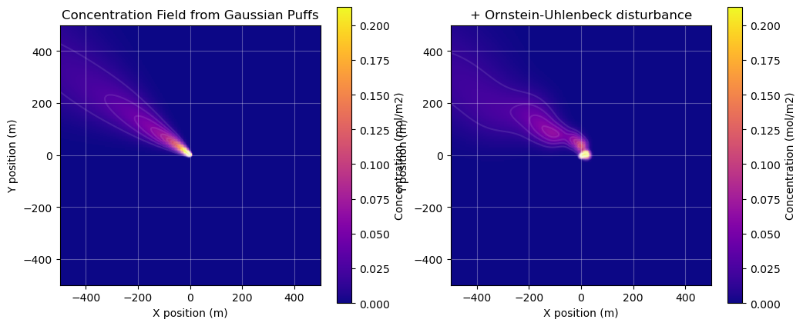
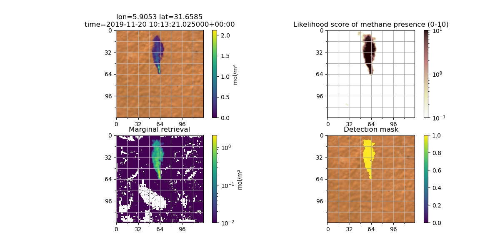
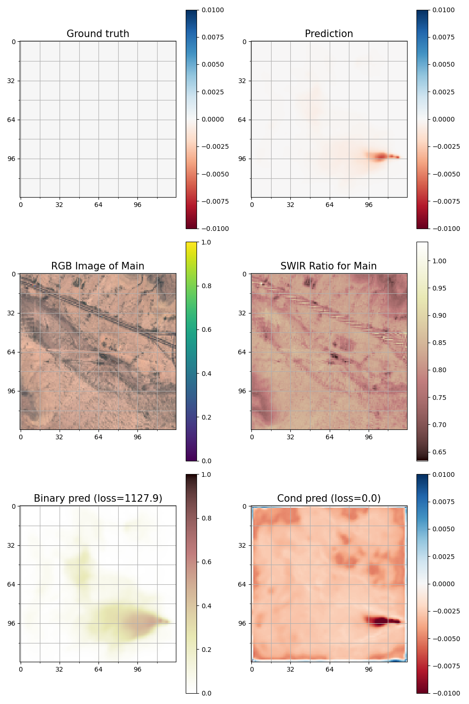
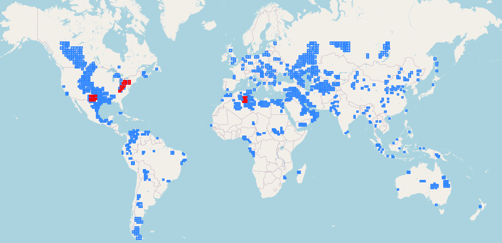
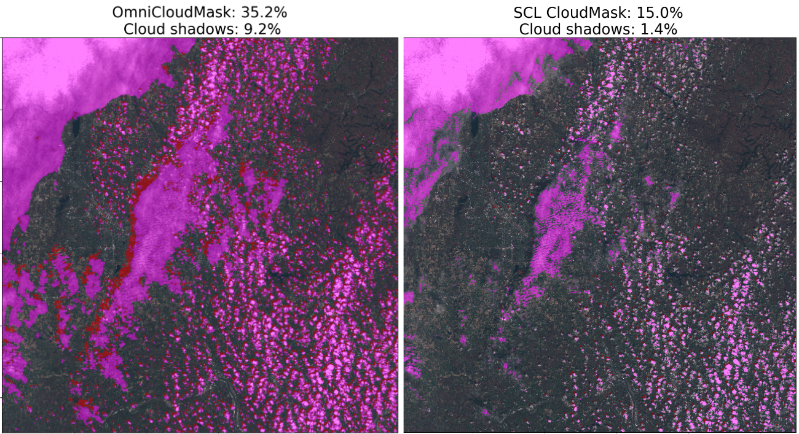

Data
What is the ground truth data used to train a neural network to detect methane in Sentinel 2 satellite images?
The main obstacle to using computer vision for methane detection in satellite imagery is the lack of ground truth data. The only reliable sources would be airborne surveys which use hyperspectral instruments to map methane concentrations (such as AVIRIS). However, there are three obstacles to using this data:
- it is still a small dataset, on the order of a few thousand observations
- some of the plumes are much weaker than what can be detected from a satellite
- the odds are very low that a satellite overpass will have occurred at the exact moment the airborne observation was made
Unlike other common computer vision tasks, human labelling of data is also impossible. This is not an easy task for the human eye and brain, unlike recognising dogs and cats or semantic segmentation of objects in photographs. Methane manifests in these images as a very weak and diffuse absorbance in two of the Sentinel 2 bands. At best, human labelling could be used for segmentation or classification (methane vs. false positive) of plumes found in the output of the classical algorithms. But in our day to day work of looking at this output, we find that many candidate plumes are ambiguous. We typically use a few indicators of whether a detection is likely to be real: proximity to oil and gas infrastructure, the morphology of the plume, and alignment with wind direction. But these assessments are subjective and unreliable.
But all is not lost, because the physics of light absorption by methane is very well understood, and easy to emulate. This makes creating synthetic data feasible. The idea is to (1) start with a methane-free Sentinel 2 scene, (2) pick a source pixel and methane emission rate, (3) simulate the time-evolution of the resulting plume over a number of hours with some input wind field (4) modify the methane-free Sentinel 2 bands using the radiative transfer algorithm. Following these four steps a million times in a million different places would in theory give us the perfect training dataset. Each of these steps is possible, and have been done before, but step (3) is computationally extremely expensive. This is the domain of "large eddy simulations" (LES), numerical atmospheric models that approximate atmospheric physics step-by-step on a four-dimensional grid (time, altitude, x and y coordinates). Javier Gorroño in Daniel Varon's group at Harvard have run a handful of such simulations on university super-computers, and these are available (we use them as part of our test suite), see Gorroño et al. 2023. Some groups such as Radman et al. (2023) use a small number of LES simulations (10 in this case) sampled repeatedly in time to form a corpus of training plumes. These plumes are used repeatedly over a variety of satellite scenes to train neural networks. Even this limited number of simulations is complex and expensive, but the generalizability of this approach is risky, as the neural network could learn to recognise certain plume shapes in different contexts, but fail to detect methane in real life.
To get away from this high computational cost, one possibility is to use much coarser and approximate simulations. For example, one could use a Gaussian air pollutant dispersion model to emulate methane in the atmosphere from a point source, as was demonstrated in Rouet-Leduc and Hulbert (2024). Alexandre et al. 2025 also use a similar strategy for the related problem of detecting black carbon in flares. There is a risk with this approach, which is that the neural network could learn to recognise particular morphological features of that approximation that generalise poorly to the real world. A certain level of realism therefore needs to be achieved in order to detect real methane plumes. We describe one approach in more details in How do you simulate methane plumes?
How do you simulate methane plumes?
We simulate methane plumes using a custom 2D Gaussian puff model, a standard approach for modeling how pollutants disperse in the atmosphere. Dean (2015) gives a bit of background on Gaussian plume and Gaussian puff models, and provides further references.
The model treats a continuous methane release as a series of individual "puffs" of gas. Each puff is carried by the wind field and diffuses/spreads out over time, forming a Gaussian concentration profile.
To create realistic simulations, our model incorporates several key features:
- Time-varying Wind: instead of assuming a constant wind speed and direction, we use real sub-hourly wind data, though it could also be simulated. This allows the plume to meander and change direction, mimicking real-world conditions.
- Turbulence: to simulate the small-scale, chaotic motions of the atmosphere, we add a random "wobble" to the position of each puff using a Ornstein–Uhlenbeck random walk. This creates a more complex and realistic plume structure.
All plumes were simulated with an emission rate of 1000 kg/hr, but can be rescaled by an arbitrary multiplicative factor before inserting them into a satellite scene. We have experimented with Pareto distributions, to mimic the power law of plume sizes that have been observed in multiple sources such as Ehret et al. 2022, but found that the very high skew of that distribution gave the model insufficient training examples in the 500-2,000 kg/hr range, which caused the model performance to deteriorate. We also experimented with log-normal distributions with a scale parameter of 1,000 kg/hr. Currently, we do not have a strong recommendation for the best distribution to use for model training.
We calibrated the parameters of the Gaussian puff model using the five large eddy simulation outputs of methane plumes provided by Gorroño et al. (2023).

Have you tried other simulation techniques for methane plumes?
Orbio's early computer vision prototypes were trained using what we called "recycled plumes." These were plumes retrieved and masked out of Sentinel 2 imagery using classical methods (derived from Varon et al. (2021)), and without any of our filters for false positives. The vast majority of these are therefore false positives, triggered by biophysical processes that affect the B12 and B11 reflectances. Using false positives as "ground truth" was a deliberate strategy to eliminate morphological information that we do not want the neural network to use. Since the simulated ground truth mimics false positives, the neural network is forced to use alternative information from the Sentinel 2 bands, and is prevented from using "morphology shortcuts" that could fail to generalise. For example, the neural network can learn the fact that a methane plume can never have a corresponding shape that appears in the other bands, as methane is transparent in all other bands. From the radiative transfer equations, it can learn the distinct spectral signature of methane, and it can learn that methane can only absorb light, and cannot make a pixel brighter. It can learn to recognise and filter out common objects and phenomena that often cause false positives with the classical algorithm: water bodies, clouds, cloud shadows, etc.
 Figure: detection of a plume at Hassi Messaoud with a computer vision model trained using "recycled" plumes only.
This strategy was quite successful, and has the distinctive advantage that morphology can still be used for quality assurance purposes, whereas models trained on realistic plumes could potentially "hallucinate" plumes that look very realistic. We show an example below from a model trained with Gaussian plumes.
 Figure: a very realistic-looking false positive from our validation set observed in an intermediary epoch of one of our models trained with Gaussian plumes.
The major downside of using "recycled" plumes is that morphological information is left unused, information that is very helpful for the neural network to distinguish between real methane and false positives. Lowering the detection threshold therefore required us to insert realistic plumes in the synthetic data. We found that inserting rescaled plumes detected by AVIRIS yielded some of our best results to date, and is therefore what was used to train the model supplied within this repository. There are a few caveats to keep in mind. First, the retrieval and masking of these plumes is the product of another algorithm (generally a matched filter) and reflects choices made to filter plumes from false positives. This could introduce biases in the training data, for example towards larger plumes, or poor masking in certain cases distorting the morphological information. There is also a relatively limited number (a few thousand) of such plumes available for training, which creates a risk of overfitting. For these reasons, we believe there may still be benefits from using simulated plumes, but our initial experiments with Gaussian plumes have not yet yielded clear improvements.
What is the input to the neural network?
The input (X) to the neural network is a selection of Sentinel 2 (L1C) reflectance bands from the target scene and two prior reference scenes of the same location, concatenated into a single tensor. In our latest models, we use bands B11, B12, B8A, B07, B05, B04, B03, and B02, and crop 128x128 pixels for each chip, so the input tensor has shape 24x128x128.
We use the top of the atmosphere reflectances directly from the L1C product supplied by Copernicus. The raw numbers from the L1C granules are rescaled so the reflectance scale is in the 0-1 range. We discuss the alternative use for L2A granules in Have you tried using your model on Level 2A Sentinel 2 data?.
For each chip, the labels (y) are the fractional change in the B12/B11 band ratio ("frac") from the methane-free scene (denoted by a subscript o) to the observed reflectances.
Frac is zero for pixels without methane, and negative when methane is present. It is known for scenes with synthetically inserted methane, but otherwise must be estimated.
Why do you use reference scenes?
We include reference scenes to give the model temporal context— a view of what the area typically looks like without methane. This helps the model focus on changes that could indicate methane, rather than focus on terrain/other background features.
The idea is conceptually similar to the Multi-Band Multi-Pass (MBMP) approach (Varon et al. 2021) used in the classical physics-based methane detection, where multiple past observations are compared to a target scene (with methane). Like MBMP, our method uses temporal context to enhance the methane signal and reduce false positives, but instead of just computing the differences between the spectral bands, we learn these changes using supervised learning.
Have you tried using your model on Level 2A Sentinel 2 data?
The vast majority of the literature on methane detection in multispectral data uses L1C (top of the atmosphere reflectance) data, which is conceptually natural as the absorption of light due to methane happens in the atmosphere. The post-processing of the L1C to L2A aims to invert atmospheric effects to obtain the surface reflectance. One may assume that this should therefore remove the effect of methane plumes in the atmosphere, but of course the presence of a methane plume is unknown to the processing software, so it turns out L2A data can also be used. Our experiments training and validating computer vision algorithms on L2A data showed no significant difference in performance. In the end, we opted for L1C due to the earlier availability of the data for real-time use cases, and to mitigate any remaining doubts that the L2A processing could distort the methane signal. But for other use cases, using L2A data could have advantages. In particular, the wide availability of L2A data as cloud-optimised geotiffs could be computationally advantageous for targeted inference on small areas.
How do you select reference scenes?
For each target scene, our model uses the two last cloud/cloud shadow free images closest in time as additional reference scenes to make detecting methane easier. Because having a nearly cloud free reference scene within the last week of the target scene is much better than having a completely cloud free reference scene one month in the past, we allow for up to 5% of “bad pixels”, meaning clouds, cloud shadows or no data.
The larger the crop of the whole satellite image we use as a target scene, the harder it is to find perfect, low cloud reference scenes as parts of the image may be cloudy and other parts are clear. Hence, choosing crop sizes not larger than e.g. 500x500 px is advised to be able to find clear view reference scenes close in time. We use 128x128 px crops during training and 500x500 px crops in production.
The whole synthetic data generation pipeline can be inspected here.
Why are the training labels not just the methane concentration?
The choice of metric for the "ground truth" labels is a fairly arbitrary choice. For example, the fractional absorption in B12 would also be suitable. However, we do not predict the methane enhancement (in mol/m², say) directly, because obtaining this requires additional information about the angle of the sun and of the instrument and assumptions about the atmospheric composition that are not made available to the neural network. Translating the frac into methane concentration is a simple postprocessing step that we describe in more detail in Postprocessing. We made a different choice for hyperspectral data, see Hyperspectral.
How large are your training and validation datasets?
We used a training dataset of around 1.5 million 128x128 chips coming from 3413 Sentinel 2 IDs and 1407 different MGRS tiles overlapping global oil and gas producing areas. The validation dataset had around 225,000 128x128 chips coming from 248 Sentinel 2 IDs and 33 different MGRS tiles. The validation data was selected to come from three important and very different regions in terms of vegetation and biome classification: Hassi (Algeria, desert), Permian (Texas, New Mexico, arid to semi-arid) and Marcellus (North East of the USA, temperate forests). Blue: MGRS tiles used for training data, Red: MGRS tiles used for validation data
How was the training dataset created?
We started by filtering all global MGRS Sentinel 2 tiles down to those intersecting oil and gas producing areas using an internal dataset. Then, given a number of total IDs we want to sample and a distribution over world region, we queried the Sentinel 2 Planetary Computer STAC catalogue for random IDs in the selected MGRS tiles over the 2016-2024 history.
The distribution over world regions should be selected according to where the models are applied in production and where how much oil and gas is produced. Ours was: 34% US, 24% Middle East, 12% Africa, 10% Commonwealth of Independent States (CIS), 5% NA without USA, 5% South and Middle America, 5% Asia, 2.5% Australia, 2.5% EU
As we want the model to be able to deal with all kinds of conditions, clouds and no data, we did not restrict the initial querying for IDs in any significant way. Only after an ID is sampled with X% obscured pixels (e.g. 80% where 50% are no data and another 30% clouds), we sample another ID with probability X% with a maximum of 40% no data and 40% cloud cover (in the valid pixels). This is done to ensure that we have valid, non-obscured pixels from all sampled areas.
This whole process can be inspected within this notebook.
How was the validation dataset created?
The validation data was selected to come from three important and very different regions in terms of vegetation and biome classification: Hassi (Algeria, desert), Permian (Texas, New Mexico, arid to semi-arid) and Marcellus (North East of the USA, temperate forests). See here for more details on the choice of these regions.
We sampled much more (around 8) Sentinel 2 IDs for each of the 66 MGRS tiles covering these three regions from 2016-2024 and then split off 50% of the MGRS tiles per region and their IDs into the training set and the other 50% into the validation set. Splitting on MGRS level made sure that the spatial overlap is minimal which makes the validation results robust against spatial overfitting.
The resulting validation set has 33 MGRS tiles (9 from the region around Hassi, 13 from Marcellus and 11 from Permian) and 248 Sentinel 2 IDs from 2016-2022.
This whole process can be inspected within this notebook.
Have you tried using a larger training dataset?
We gradually increased the size of the training dataset in early experiments, but found that the benefits of doing so tapered off at the current size. We find that halving or doubling the dataset size does not have a measurable effect on model performance. This is unusual in deep learning applications, but could be explained by our already large dataset (around 1.5million chips), we have seen significant improvements going from 0.1million to 0.75million chips.
What cloud mask do you use?
We recently switched from using the Scene Classification Layer of Sentinel-2 L2A to using OmniCloudMask which is slower (as it’s using Deep Learning models itself), but much more accurate in cloud and cloud shadow segmentation, see the Figure below. Left: OmniCloud clouds and cloud shadows, Right: SCL clouds and cloud shadows for a full Sentinel-2 MGRS scene
How is the data saved and loaded back in for training?
Our experience with geospatial data is that common formats like GeoTIFFs, NetCDF or JPEG2000 (the native format for the Sentinel 2 L1C data) incur a high overhead when loading the data into memory. Benchmarking the time taken to load a certain file into memory using common tools like GDAL and rasterio, and comparing them to the read speeds of the underlying disk or file system, usually shows at least an order of magnitude discrepancy. This is especially true for small files, like our chips for training neural networks. We performed some benchmarks reading and writing to disk a random 64 bit floats in an array of size 8x256x256. The `numpy.tobytes` and `numpy.frombuffer` methods, which simply dump the memory representations of the arrays onto disk, took 82 µs and 1.1 µs. Meanwhile, writing to a netcdf3 file with xarray took 3.3×10³ µs and reading took 9.5×10² µs. Using the zarr file format or h5netcdf were even slower. For this reason, we decided to use `numpy.tobytes` directly for saving training chips.
We also decided to store the training chips in large parquet files, each containing the chips for a single Sentinel 2 L1C granule. The idea was to avoid having millions of tiny files, and to be able to store metadata (like the number of plumes inserted) alongside the features and labels, and use a cloud-native format to be able to randomly access rows, so we could easily shuffle the training data between epochs. The parquet file format turned out to be inappropriate for this case, and we would not recommend replicating this pattern. Setting the row group small enough to enable efficient random access (we set the row group size to be just one row) made the size of the parquet metadata balloon, so just opening the parquet files without reading in any data resulted in out-of-memory errors crashing the training process.
For loading the data into pytorch, our attempts to leverage `dask` proved fruitless, and we wrote custom Dataset classes wrapping `pyarrow` methods directly to enable efficient random access over multiple files. We also found that we needed to use pytorch's DistributedDataParallel to fully utilize the multiple GPUs on our training instances.
Are any data augmentations used during training?
Unlike most computer vision applications, because we can generate arbitrarily large synthetic datasets, using augmentations to juice as much information as possible out of every sample is not essential. So we only use simple non-destructive augmentations: random rotations by multiples of 90°, and random flips.
In earlier model training, we also implemented and used a signal modulation transformation that weakens the methane concentration by a random constant factor in each chip. We found that presenting the model with stronger plumes in early epochs, and gradually reducing them in later epochs, helped guide the optimizer. This can be understood as a form of curriculum learning (Bengio 2009). The randomness was important so the model would still occasionally see strong examples, as otherwise the model would forget how to detect strong plumes in later epochs.
In more recent training runs, with improvements to the optimizer settings and model architecture, we noticed that the modulation was no longer needed to get good results, and the modulation settings had no significant effect on model performance, so we are no longer using this transformation.
References
Alexandre, Tuel, Kerdreux Thomas, and Thiry Louis. "Black carbon plumes from gas flaring in North Africa identified from multi-spectral imagery with deep learning." arXiv preprint arXiv:2406.06183 (2024).
Bengio, Yoshua, Jérôme Louradour, Ronan Collobert, and Jason Weston. "Curriculum learning." In Proceedings of the 26th annual international conference on machine learning, pp. 41-48. 2009.
Dean, Christopher Lee. "Efficient MCMC inference for remote sensing of emission sources." PhD diss., Massachusetts Institute of Technology, 2015.
Ehret, Thibaud, Aurélien De Truchis, Matthieu Mazzolini, Jean-Michel Morel, Alexandre D’aspremont, Thomas Lauvaux, Riley Duren, Daniel Cusworth, and Gabriele Facciolo. "Global tracking and quantification of oil and gas methane emissions from recurrent sentinel-2 imagery." Environmental science & technology 56, no. 14 (2022): 10517-10529.
Gorroño, Javier, Daniel J. Varon, Itziar Irakulis-Loitxate, and Luis Guanter. "Understanding the potential of Sentinel-2 for monitoring methane point emissions." Atmospheric Measurement Techniques 16, no. 1 (2023): 89-107.
Radman, Ali, Masoud Mahdianpari, Daniel J. Varon, and Fariba Mohammadimanesh. "S2MetNet: A novel dataset and deep learning benchmark for methane point source quantification using Sentinel-2 satellite imagery." Remote Sensing of Environment 295 (2023): 113708.
Varon, Daniel J., Dylan Jervis, Jason McKeever, Ian Spence, David Gains, and Daniel J. Jacob. "High-frequency monitoring of anomalous methane point sources with multispectral Sentinel-2 satellite observations." Atmospheric Measurement Techniques 14, no. 4 (2021).